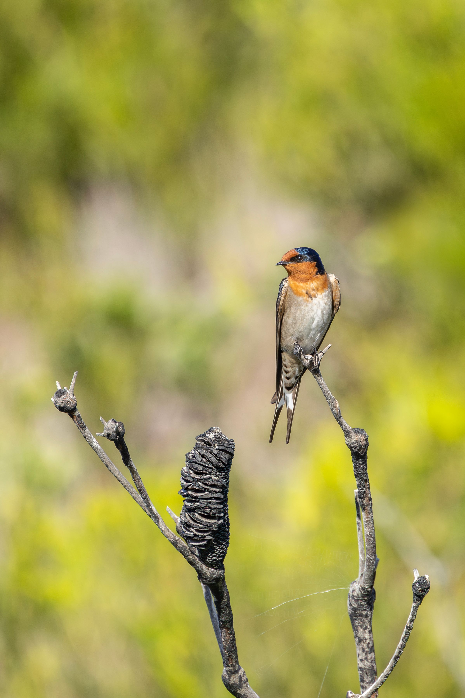

The Welcome Swallow is a small, fast-flying Australian swallow with a glossy blue-black back, reddish forehead and throat, pale underparts and a deeply forked tail. It is one of the most familiar swallows in Australia and can be found around wetlands, farmland, open woodland, parks, towns and coastal areas. Welcome Swallows spend much of their time in flight catching insects, often flying low over water or grassland. They are agile fliers capable of sudden turns and rapid changes of direction while pursuing flying insects. The species frequently nests on buildings, bridges and other structures close to suitable feeding areas.